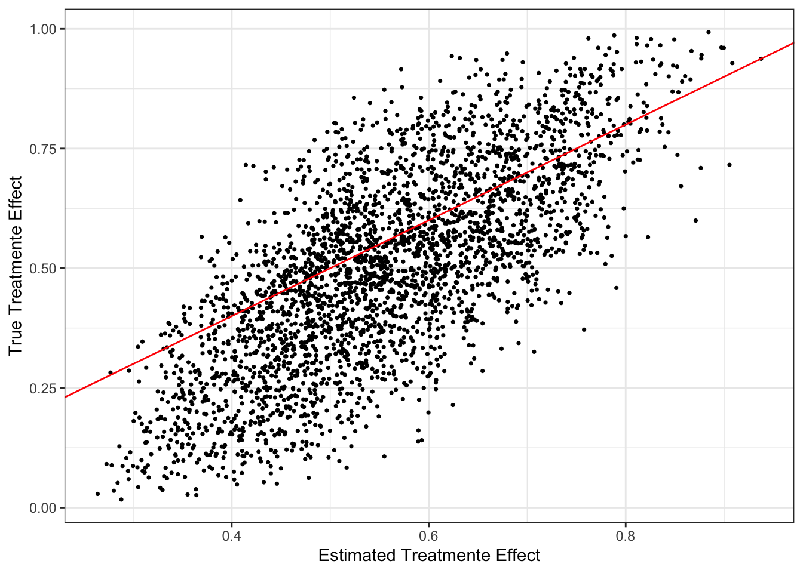

library(data.table)
library(tidyverse)
library(rsample)
library(xgboost)
library(rlearner)
library(rsample)
library(grf)
library(glmnet)15 Causal Model Selection
Model selection can be done via cross-validated MSE as the criteria when your goal is prediction. However, when your interest is in finding the best causal ML model, MSE is clearly not an appropriate measure. Instead, R-score can be used. Let \(\tilde{Y}_i\) and \(\tilde{T}_i\) denote \(Y_i - \hat{f}(X_i)\) and \(T_i - \hat{g}(X_i)\), respectively, where \(\hat{f}(X_i)\) and \(\hat{f}(X_i)\) are the predicted values (preferably based on cross-fitting or out-of-bad predictions if forest-based estimation is used) of \(Y_i\) and \(T_i\) based on any appropriate machine learning methods in the first stage of DML. Further, let \(\hat{\theta}(X)\) denote CATE estimates by a CATE estimator (e.g., causal forest, X-learner)
R-score is written as follows:
\[ \begin{aligned} \sum_{i=1}^N [\tilde{Y}_i - \hat{\theta}(X)\cdot \tilde{T}_i]^2 \end{aligned} \]
So, this is just the objective function of the second stage estimation of R-learner (DML) without the regularlization term with CATE estimates plugged in. Nie and Wager (2021) suggested using cross-validated R-score to select the model for CATE estimation.
Depending on whether you are selecting a model within the same model class (hyper-parameter tuning) or selecting a model among different classes of models (hyper-parameter tuning and model selection), procedures you follow are different.
15.1 Hyper-parameter tuning
Let’s go thorough these processes using a simple example. We use the following DGP:
This is the same DGP as DGP A in Section 12.5.
\[ \begin{aligned} Y_i & =\theta(X_i)\cdot T + \alpha\cdot g(X_i) + \mu_i \\ T_i & = Bernouli(f(X_i)) \end{aligned} \]
, where
\[ \begin{aligned} g(X_i) & = sin(\pi X_{i,1}X_{i,2}) + 2(X_{i,3}-0.5)^2 + X_{i,4} + 0.5 X_{i,5}\\ f(X_i) & = max(0.1, min(sin(\pi X_{i,1}X_{i,2}), 0.9)) \\ \theta(X_i) & = (X_{i,1} + X_{i,2}) / 2 \\ X_i & \sim Uni(0,1)^5 \end{aligned} \]
Code
gen_data_A <- function(N, alpha){
data <-
data.table(
x1 = runif(N),
x2 = runif(N),
x3 = runif(N),
x4 = runif(N),
x5 = runif(N),
u = rnorm(N)
) %>%
.[, `:=`(
g_x = alpha * (sin(pi * x1*x2) + 2*(x3-0.5)^2 + x4 + 0.5*x5),
f_x = pmax(0.1, pmin(sin(pi * x1*x2), 0.9)),
theta_x = (x1+x2)/2
)] %>%
.[, t := as.numeric(runif(N) < f_x)] %>%
.[, y_det := theta_x * t + g_x] %>%
.[, y := y_det + u] %>%
.[, id := 1:.N]
return(data[])
}Let’s create a dataset according to the DGP (unfold the Code chunk above to see how gen_data_A() is defined).
set.seed(78243)
(
data <- gen_data_A(N = 3000, alpha = 1)
) x1 x2 x3 x4 x5 u
1: 0.05588738 0.5024586 0.3188849 0.141067147 0.5890057 0.35256999
2: 0.58004369 0.1415465 0.8959332 0.659352141 0.1904962 1.43250418
3: 0.41380275 0.1742095 0.6409846 0.006009018 0.1884889 -0.29099820
4: 0.45570715 0.4409627 0.8932784 0.734628277 0.6819363 -0.97072123
5: 0.06816778 0.6043697 0.3343660 0.272298360 0.4449831 -1.11073251
---
2996: 0.36169880 0.6029558 0.6076527 0.597417750 0.1641424 -0.15304283
2997: 0.44764874 0.5301874 0.5056252 0.410082290 0.4279445 -0.01657616
2998: 0.85780794 0.1803200 0.1772361 0.390234048 0.3423721 -0.11284575
2999: 0.33223800 0.6996797 0.9862959 0.034219362 0.9366175 -0.27970867
3000: 0.22820071 0.0450673 0.2772332 0.188920311 0.7176262 -0.76964159
g_x f_x theta_x t y_det y id
1: 0.5892803 0.1000000 0.2791730 0 0.5892803 0.94185028 1
2: 1.3232106 0.2550841 0.3607951 1 1.6840057 3.11650986 2
3: 0.3645481 0.2245413 0.2940061 0 0.3645481 0.07354994 3
4: 1.9751290 0.5901968 0.4483349 1 2.4234640 1.45274272 4
5: 0.6787271 0.1290680 0.3362688 0 0.6787271 -0.43200537 5
---
2996: 1.3354524 0.6327852 0.4823273 0 1.3354524 1.18240955 2996
2997: 1.3025441 0.6784263 0.4889181 1 1.7914622 1.77488607 2997
2998: 1.2368142 0.4670410 0.5190640 0 1.2368142 1.12396848 2998
2999: 1.6425852 0.6670896 0.5159589 0 1.6425852 1.36287652 2999
3000: 0.6792872 0.1000000 0.1366340 0 0.6792872 -0.09035435 3000Step 1 :
We use random forest implemented by regression_forest() and probability_forest() by the grf package to estimate \(E[Y|X]\) and \(E[T|X]\), respectively. For the sake of space and simplicity, we will not conduct cross-validation to tune hyper-parameters for these models in this example (hyper-parameter tuning via cross-validation of the first-stage estimation is covered in Chapter 20).
Estimate \(E[Y|X]\) and calculate \(\tilde{Y}\)
rf_trained_y <-
regression_forest(
X = data[, .(x1, x2, x3, x4, x5)],
Y = data[, y]
)
#=== out-of-bag prediction of Y ===#
data[, y_hat := rf_trained_y$predictions]
#=== calculate y_hat ===#
data[, y_tilde := y - y_hat]Estimate \(E[T|X]\) and calcualte \(\tilde{T}\)
rf_trained_t <-
probability_forest(
X = data[, .(x1, x2, x2, x3, x4, x5)],
Y = data[, factor(t)],
)
#=== out-of-bag prediction of T ===#
data[, t_hat := rf_trained_t$predictions[, 2]]
#=== calculate t_hat ===#
data[, t_tilde := t - t_hat]Steps 2 and 3:
Suppose we have determined that we use causal forest for the second stage CATE estimation. Here is the list of hyper-parameter value sets we will examine in this example.
(
par_data <-
expand.grid(
mtry = c(2, 5),
min.node.size = c(5, 10, 20),
sample.fraction = c(0.4, 0.5)
) %>%
data.table()
) mtry min.node.size sample.fraction
1: 2 5 0.4
2: 5 5 0.4
3: 2 10 0.4
4: 5 10 0.4
5: 2 20 0.4
6: 5 20 0.4
7: 2 5 0.5
8: 5 5 0.5
9: 2 10 0.5
10: 5 10 0.5
11: 2 20 0.5
12: 5 20 0.5For each of the parameter sets, we will find a cross-validated R-score. We use 5-fold cross validation repeated 3 times.
(
data_folds <- vfold_cv(data, v = 5, repeats = 3)
)# 5-fold cross-validation repeated 3 times
# A tibble: 15 × 3
splits id id2
<list> <chr> <chr>
1 <split [2400/600]> Repeat1 Fold1
2 <split [2400/600]> Repeat1 Fold2
3 <split [2400/600]> Repeat1 Fold3
4 <split [2400/600]> Repeat1 Fold4
5 <split [2400/600]> Repeat1 Fold5
6 <split [2400/600]> Repeat2 Fold1
7 <split [2400/600]> Repeat2 Fold2
8 <split [2400/600]> Repeat2 Fold3
9 <split [2400/600]> Repeat2 Fold4
10 <split [2400/600]> Repeat2 Fold5
11 <split [2400/600]> Repeat3 Fold1
12 <split [2400/600]> Repeat3 Fold2
13 <split [2400/600]> Repeat3 Fold3
14 <split [2400/600]> Repeat3 Fold4
15 <split [2400/600]> Repeat3 Fold5The following function find R-score for a given fold and parameter set.
get_cv_rscore_np <- function(n, parameters) {
training_data <- analysis(data_folds[n, ]$splits[[1]])
eval_data <- assessment(data_folds[n, ]$splits[[1]])
#=== train a CF model on training data ===#
cf_trained <-
causal_forest(
X = training_data[, .(x1, x2, x3, x4, x5)],
Y = training_data[, y],
W = training_data[, t],
Y.hat = training_data[, y_hat],
W.hat = training_data[, t_hat],
mtry = parameters[, mtry],
min.node.size = parameters[, min.node.size],
sample.fraction = parameters[, sample.fraction]
)
theta_hat <- predict(cf_trained, eval_data[, .(x1, x2, x3, x4, x5)])
rscore <- eval_data[, sum((y_tilde - theta_hat * t_tilde)^2)]
return_data <-
data.table(
rscore = rscore,
fold = n
) %>%
cbind(., parameters)
return(return_data)
}The following function calculates R-score for all the folds for a given parameter set.
get_cv_rscore <- function(parameters) {
lapply(
seq_len(nrow(data_folds)),
function(n) get_cv_rscore_np(n, parameters)
) %>%
rbindlist()
}For example, for the parameter set at the first row of par_data,
get_cv_rscore(par_data[1, ]) rscore fold mtry min.node.size sample.fraction
1: 609.5867 1 2 5 0.4
2: 625.8628 2 2 5 0.4
3: 642.8026 3 2 5 0.4
4: 592.2378 4 2 5 0.4
5: 623.8983 5 2 5 0.4
6: 658.4454 6 2 5 0.4
7: 629.8173 7 2 5 0.4
8: 603.9405 8 2 5 0.4
9: 595.9709 9 2 5 0.4
10: 606.0262 10 2 5 0.4
11: 609.2626 11 2 5 0.4
12: 637.8631 12 2 5 0.4
13: 651.3631 13 2 5 0.4
14: 582.6500 14 2 5 0.4
15: 619.5787 15 2 5 0.4Repeat this for all the rows of par_data,
(
cv_rscore <-
lapply(
seq_len(nrow(par_data)),
function(x) get_cv_rscore(par_data[x, ])
) %>%
rbindlist()
) rscore fold mtry min.node.size sample.fraction
1: 609.3074 1 2 5 0.4
2: 625.9558 2 2 5 0.4
3: 642.9224 3 2 5 0.4
4: 591.9167 4 2 5 0.4
5: 623.8610 5 2 5 0.4
---
176: 609.3327 11 5 20 0.5
177: 637.5821 12 5 20 0.5
178: 652.7371 13 5 20 0.5
179: 582.7777 14 5 20 0.5
180: 620.8192 15 5 20 0.5Taking the mean of R-score by parameter set,
(
rscore <- cv_rscore[, .(rscore = mean(rscore)), by = .(mtry, min.node.size, sample.fraction)]
) mtry min.node.size sample.fraction rscore
1: 2 5 0.4 619.2907
2: 5 5 0.4 619.2949
3: 2 10 0.4 619.4912
4: 5 10 0.4 619.5872
5: 2 20 0.4 619.8484
6: 5 20 0.4 619.9799
7: 2 5 0.5 619.3572
8: 5 5 0.5 619.5302
9: 2 10 0.5 619.4132
10: 5 10 0.5 619.5597
11: 2 20 0.5 619.7925
12: 5 20 0.5 619.9107Steps 4 and 5 :
And, the best parameter set is
(
best_par_cf <- rscore[which.min(rscore), ]
) mtry min.node.size sample.fraction rscore
1: 2 5 0.4 619.2907We now train a CF on the entire dataset.
cf_trained <-
causal_forest(
X = data[, .(x1, x2, x3, x4, x5)],
Y = data[, y],
W = data[, t],
Y.hat = data[, y_hat],
W.hat = data[, t_hat],
mtry = best_par_cf[, mtry],
min.node.size = best_par_cf[, min.node.size],
sample.fraction = best_par_cf[, sample.fraction]
)We now use this trained model to predict \(\theta(X)\).
Though, not necessary, we can find an \(R^2\)-like score by contrasting the R-score of the trained model against the R-score based on a constant (non-heterogeneous) treatment effect estimate. Constant treatment effect can be obtained by solving the following equation with respect to \(\theta\).
\[ \begin{aligned} \sum_{i=1}^N \tilde{Y}_i - \theta\cdot \tilde{T}_i = 0 \end{aligned} \]
theta_c <- data[, sum(y_tilde)/sum(t_tilde)]R-score associated with theta_c is
(
rscore_base <- data[, sum((y_tilde - theta_c * t_tilde)^2)]
)[1] 3764.594R-score for the trained CF model is
(
rscore_cf <- data[, sum((y_tilde - cf_trained$predictions * t_tilde)^2)]
)[1] 3095.919The score of how well a CATE model performs in capturing the heterogeneity of treatment effect can be calculated as
1 - rscore_cf/rscore_base[1] 0.1776221As you will see in Section 23.2, this is the score econml.score.RScorer returns when evaluating CATE models.
By the way, Figure 15.1 shows the quality of CATE estimates by the trained CF model.
Code
ggplot() +
geom_point(aes(y = data[, theta_x], x = cf_trained$predictions), size = 0.6) +
geom_abline(slope = 1, color = "red") +
theme_bw() +
ylab("True Treatmente Effect") +
xlab("Estimated Treatmente Effect")
15.2 Selecting from multiple classes of models
If you are comparing models when they are all under the R-learner class, selecting a model is rather straight forward. You can simply repeat the hyper-parameter tuning procedures presented above for each model, find the best model (hyper-parameter values) for each class, and then find the best model among all the best (within each class) models.
Let’s say you are also considering an R-learner in addition to CF presented above, where \(\theta(X)\) is assumed to be a linear-in-parameter model of \(X\).
\[ \begin{aligned} \theta(X) = \beta_1 x_1 + \beta_2 x_2 + \beta_3 x_3 + \beta_4 x_4 + \beta_5 x_5 \end{aligned} \]
You are considering using LASSO for the second stage estimation. So, you are minimizing the following objective function.
\[ \begin{aligned} Min_{\beta_1,\dots, \beta_5}\sum_{i=1}^N [\tilde{Y}_i - (\beta_1 x_{i,1} + \beta_2 x_{i,2} + \beta_3 x_{i,3} + \beta_4 x_{i,4} + \beta_5 x_{i,5})\cdot \tilde{T}_i]^2 + \lambda |\beta| \end{aligned} \]
where \(\lambda\) is the penalization parameter and \(|\beta|\) is the L1 norm.
Here is the list of \(\lambda\) values at which we evaluate LASSO as the second stage model.
lambda_ls <- c(0.001, 0.01, 0.02, 0.05, 0.1, 0.25, 0.5, 1)We now conduct cross-validation to find the R-score for each value of lambda_ls. It is important to use the same \(\tilde{Y}\) and \(\tilde{T}\) data as the one used for CF. For that, we can simply use data_folds.
The following function trains a LASSO for a given value of \(\lambda\) and return cross-validated R-score.
get_cv_rscore_np_lasso <- function(n, lambda) {
training_data <- analysis(data_folds[n, ]$splits[[1]])
eval_data <- assessment(data_folds[n, ]$splits[[1]])
eval_data_mat <-
eval_data[, .(x1, x2, x3, x4, x5)] %>%
as.matrix()
#=== train a CF model on training data ===#
lasso_trained <-
glmnet(
x = training_data[, .(x1 * t_tilde, x2 * t_tilde, x3 * t_tilde, x4 * t_tilde, x5* t_tilde)],
y = training_data[, y_tilde],
lambda = lambda
)
#=== predict theta(X) ===#
# note, you need to predict on X, not X *\ tilde{T} as you are interested in theta(X), not
# theta(X) * \tilde{T}
theta_hat <-
predict(
lasso_trained,
newx = eval_data_mat
)
rscore <- eval_data[, sum((y_tilde - theta_hat * t_tilde)^2)]
return_data <-
data.table(
rscore = rscore,
fold = n,
lambda = lambda
)
return(return_data)
}The following function calculates R-score for all the folds for a given value of \(\lambda\).
get_cv_rscore_lasso <- function(lambda) {
lapply(
seq_len(nrow(data_folds)),
function(n) get_cv_rscore_np_lasso(n, lambda)
) %>%
rbindlist()
}For example, for the first value of \(\lambda\) in lambda_ls,
get_cv_rscore_lasso(lambda_ls[1]) rscore fold lambda
1: 604.9262 1 0.001
2: 629.5414 2 0.001
3: 641.6540 3 0.001
4: 593.4603 4 0.001
5: 623.4632 5 0.001
6: 656.1911 6 0.001
7: 630.6406 7 0.001
8: 604.0292 8 0.001
9: 592.2011 9 0.001
10: 608.1991 10 0.001
11: 610.2925 11 0.001
12: 635.8894 12 0.001
13: 647.7679 13 0.001
14: 581.4791 14 0.001
15: 621.1256 15 0.001Repeat this for all the rows of par_data, find the mean R-score by \(\lambda\), and find the best \(\lambda\) value.
(
cv_rscore_lasso <-
lapply(
lambda_ls,
function(x) get_cv_rscore_lasso(x)
) %>%
rbindlist() %>%
.[, .(rscore = mean(rscore)), by = lambda] %>%
.[which.min(rscore), ]
) lambda rscore
1: 0.01 618.3748Remember the R-score associated with the best hyper-parameter values for CF is
best_par_cf mtry min.node.size sample.fraction rscore
1: 2 5 0.4 619.2907So, in this case, we should go for LASSO with \(\lambda = 0.01\).
Let’s train LASSO with \(\lambda = 0.01\) using the whole dataset.
lasso_trained <-
glmnet(
x = data[, .(x1 * t_tilde, x2 * t_tilde, x3 * t_tilde, x4 * t_tilde, x5* t_tilde)],
y = data[, y_tilde],
lambda = cv_rscore_lasso[, lambda]
)
coef(lasso_trained)6 x 1 sparse Matrix of class "dgCMatrix"
s0
(Intercept) -0.0008596708
V1 0.3834599495
V2 0.5372735528
V3 .
V4 0.1326269912
V5 . References
Nie, Xinkun, and Stefan Wager. 2021. “Quasi-Oracle Estimation of Heterogeneous Treatment Effects.” Biometrika 108 (2): 299–319. https://doi.org/10.1093/biomet/asaa076.